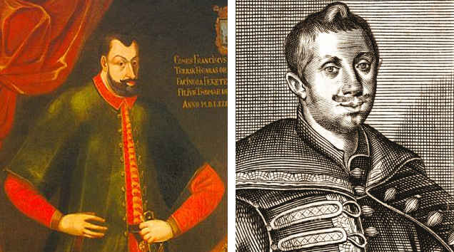
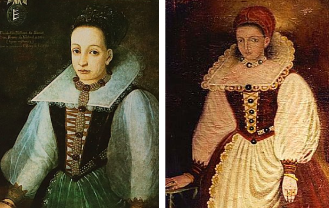
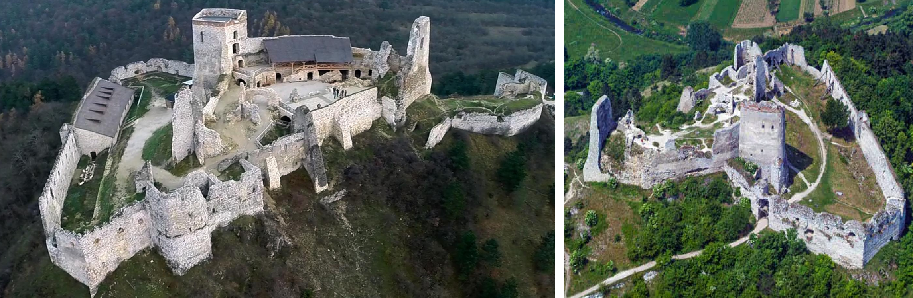

Erzsébet Báthory, conosciuta in Italia anche come Elisabetta Bathory, soprannominata la "Contessa Dracula" o "Contessa Sanguinaria" , è stata una criminale, serial killer e nobile ungherese.
Giovinezza
Erzsébet nacque nel 1560 a Nyírbátor, un villaggio nel nord-est dell'attuale Ungheria, ma venne allevata nella proprietà di famiglia di Ecsed in Transilvania . La sua famiglia, i Báthory-Ecsed e i Báthory-Somlyó, faceva parte delle casate protestanti ungheresi.
Fin da bambina dava segni di squilibrio, passando repentinamente dalla quiete alla collera. Stando alla leggenda, all'età di sei anni fu testimone di un fatto che lasciò su di lei una traccia indelebile: un gruppo di zingari venne invitato nella sua casa per intrattenere la corte; uno di essi venne però condannato a morte per aver venduto i figli ai turchi.
Le sue grida lamentose giunsero fino al castello attirando l'attenzione di Erzsébet la quale, all'alba, fuggì dal castello per vedere l'esecuzione della condanna: dei soldati tagliarono il ventre di un cavallo legato a terra, il condannato venne preso e infilato nel ventre, rimase fuori solo la testa, poi un soldato ricucì il ventre del cavallo con il condannato al suo interno.
Nel 1571, all'età di 11 anni, fu promessa in sposa al conte Ferenc Nádasdy, di cinque anni più grande di lei, e andò a vivere nel castello di Nádasdy di Sárvár nel Transdanubio, presso il confine austriaco.
Vita coniugale
Il marito aveva studiato a Vienna, noto come il "Terribile Quintetto". Amava torturare i servi, senza però ucciderli: una delle sue torture preferite consisteva nel cospargere di miele una ragazza nuda e lasciarla legata vicino alle arnie di sua proprietà. Essendo Nádasdy quasi sempre lontano da casa per combattere i turchi, la responsabilità del castello di Sárvár era affidata ad Erzsébet.
Erzsébet amava vestirsi da maschio, ma nel contempo era ossessionata dalla sua bellezza femminile. Nei primi dieci anni di matrimonio non ebbe figli, ma nei nove anni seguenti partorì tre figlie e un figlio. Fu una madre molto protettiva e gestì bene la servitù del castello.

Ferenc Nádasdy, marito di Erzsébet
Presunto sadismo e magia nera
Per passare il tempo quando il marito era lontano da casa Erzsébet cominciò a far visite alla contessa Karla, sua zia, e a partecipare alle orge da lei organizzate. Conobbe nello stesso periodo Dorothea Szentes, un'esperta di magia nera che incoraggiò le sue tendenze sadiche.
Erzsébet riteneva un affronto intollerabile la fuga di una serva e la punizione era quasi sempre la morte.
Una sera, una ragazza di dodici anni, Dora, riuscì a fuggire dal castello con indosso solo una lunga camicia bianca. Venne presa poco dopo e condotta dalla contessa, la quale la costrinse ad entrare in una gabbia cilindrica troppo stretta per sedersi e troppo bassa per stare in piedi. La gabbia venne quindi sollevata da terra tramite delle carrucole e spinta contro dei paletti appuntiti. Il valletto nano al servizio di Erzsébet, Ficzkó, manovrò le corde in modo che la gabbia oscillasse: in questo modo, il corpo venne fatto a pezzi.
In un'altra occasione, in pieno inverno, fece condurre nel cortile, sotto la sua finestra, delle ragazze denudate. Ordinò quindi di versare acqua su di loro, finché le ragazze morirono per assideramento.
Sotto tortura, dei testimoni affermarono che un giorno, dopo aver percosso una domestica, alcune gocce di sangue di questa colarono sulla mano della contessa. La Báthory credette, in seguito, che in quel punto specifico della mano la sua pelle fosse ringiovanita. Chiese agli alchimisti delucidazioni. Costoro, pur di compiacerla, si inventarono la leggenda che raccontava di una giovane vergine il cui sangue aveva avuto effetti analoghi sull'epidermide raggrinzita di un aristocratico. La Báthory finì con il convincersi che fare abluzioni nel sangue di giovani vergini (in particolare della sua stessa classe sociale), o berlo quando queste fossero state particolarmente avvenenti, le avrebbe garantito la giovinezza eterna.

Alcuni ritratti di Erzsébet
Si stima che abbia cominciato ad uccidere nel periodo tra il 1585 e il 1610. Il marito ed i parenti sapevano delle sue inclinazioni sadiche, ma non intervennero. La contessa divenne estremamente potente alla morte del marito Ferenc Nádasdy, avvenuta nel 1604. A seguito della sua scomparsa, divenne amministratrice dei beni del figlio di soli sei anni.
Cominciò a torturare e ad uccidere barbaramente giovani contadine, e in seguito, anche le figlie della piccola nobiltà. Infatti, nel 1609 Erzsébet istituì, nel suo castello, un'accademia che aveva, come fine apparente, l'educazione di ragazze provenienti da famiglie agiate. Prese a tradimento, le sue vittime venivano spogliate, incatenate a capo in giù, quindi, seviziate. Le loro gole venivano recise e il sangue fluiva, pronto per essere raccolto e usato da Erzsébet.
Si narra che la Contessa abbia fatto costruire da un orologiaio svizzero un marchingegno chiamato "vergine di ferr uccisa da lei stessa) che arrivavano fino quasi ai piedi. Ogni qualvolta una ragazza le si avvicinava, la vergine di ferro alzava le braccia e stringendola in una morsa mortale la uccideva, trapassandola con dei coltellacci acuminati fuoriusciti dal petto.

Castello di Cachtice, Repubblica Slovacca;qui Erzsébet trascorse lunghi periodi lontani dal marito
Arresto
Quando le denunce per le sparizioni delle giovani aristocratiche arrivarono alla Chiesa cattolica, l'imperatore Mattia II intervenne ordinando un'indagine sulla nobildonna. Gli inviati dell'imperatore entrarono di nascosto nel castello e colsero sul fatto la Báthory mentre torturava alcune ragazze; trovarono anche in molte stanze e nelle prigioni diversi cadaveri straziati e donne ancora vive con parti del corpo amputate.
Fu incriminata e murata viva in una stanza del suo stesso castello, con un foro per ricevere il cibo. Morì quattro anni più tardi, lasciandosi morire di fame in quella cella.
Altre quattro persone, tra cui la fedelissima domestica Ilona Joó e l'amante László, un esponente della piccola nobiltà locale, furono condannati come suoi complici e torturati con le seguenti sentenze: Ficzkó venne decapitato e gettato nel fuoco, Ilona Joó ebbe le dita amputate e fu bruciata viva assieme a Dorka. Katalyna Beniezky, la meno cattiva del gruppo della contessa Báthory, ebbe una condanna più mite, perché ella si limitava a nascondere i cadaveri delle fanciulle uccise e a volte, finché erano ancora in vita, cercava di dar loro da mangiare a rischio della sua stessa vita.
Non è mai stato chiarito il numero esatto delle sue presunte vittime, ma dai suoi diari (presumibilmente falsificati) e dai suoi appunti emergono 650 nomi accuratamente trascritti. Se questi nomi fossero esattamente quelli di tutte le sue vittime, ciò farebbe di lei la più efferata e più grande assassina seriale della storia. Ma, come indicato sopra, gli storici hanno ridotto le vittime entro un numero compreso tra le 100 e le 300 circa.
La sua storia sfuma nella leggenda ed è condita di tradizioni popolari: Erzsébet Báthory è infatti diventata un personaggio di culto dell'immaginario vampiresco.